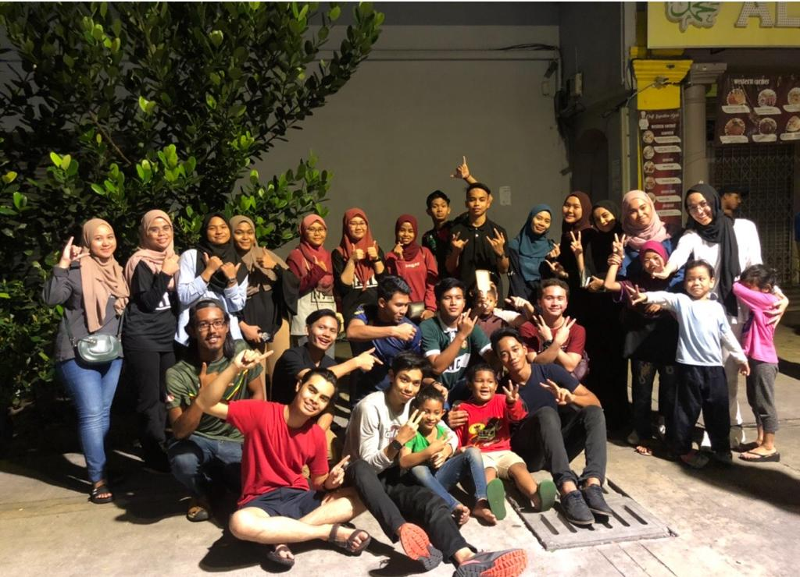
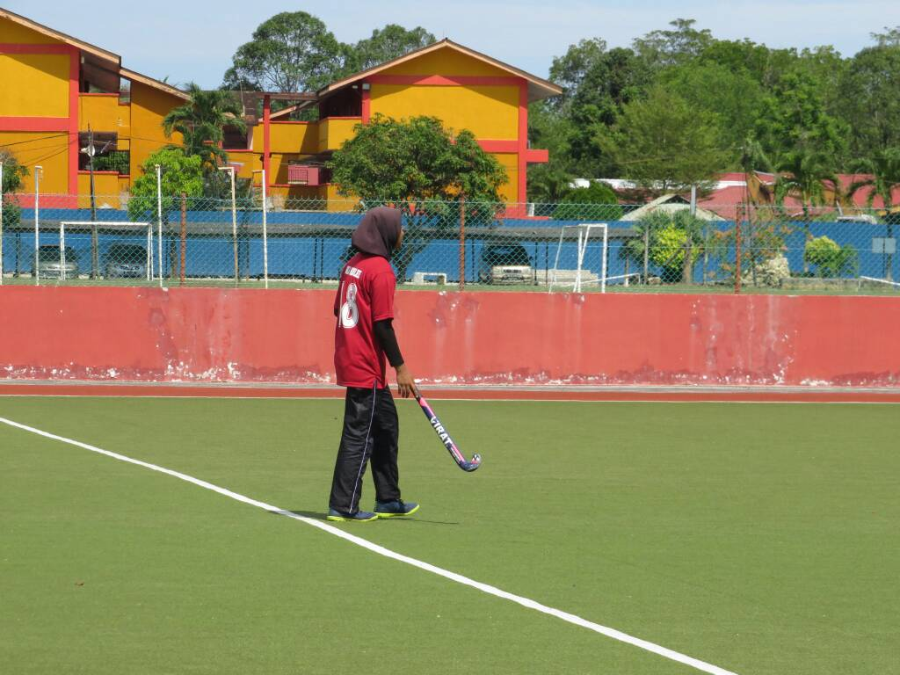

Hana's Experience 🌈
Enjoy my stories that contain my experiences at random because I love telling stories to others 😁
- Food for Homeless.
- My favorite sport all the time.
- Family Day 2022.



Enjoy my stories that contain my experiences at random because I love telling stories to others 😁